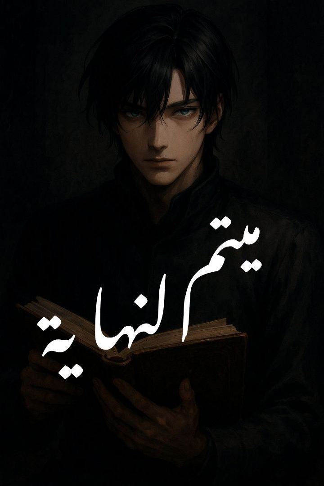
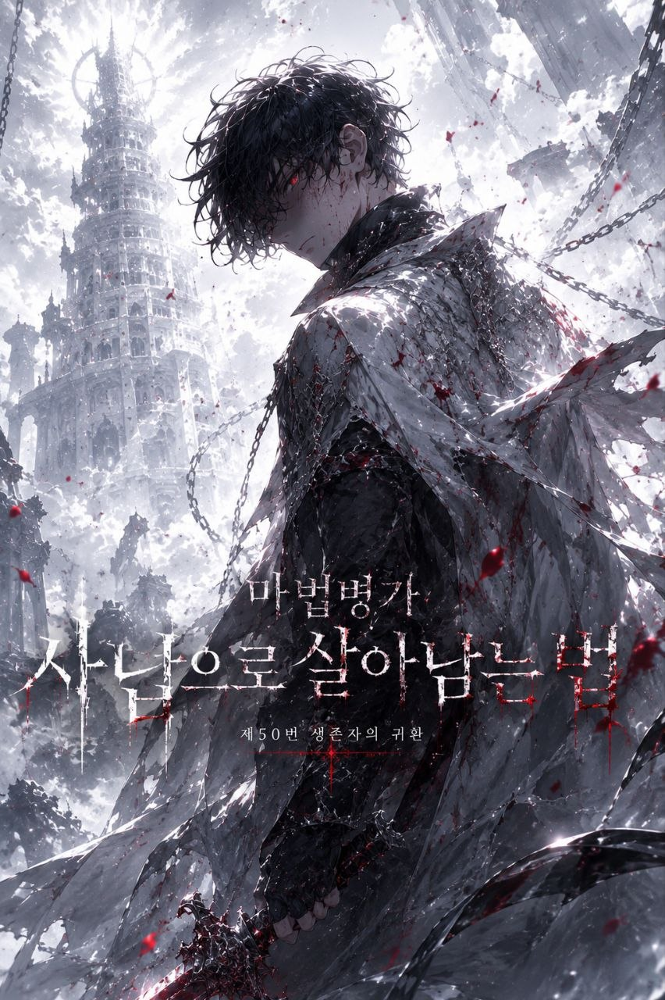

أكتب عن الشخصيات التي تحمل أسرارًا أثقل من أن تُقال، وعن العوالم التي تختبئ خلف الأبواب العادية. هنا تجدون أعمالي، من أولى الصفحات إلى آخر سطر.

ميتم النهاية
في عالم تُحدَّد فيه قيمة الإنسان بقوة سحره، يُبعث فتى غامض في جسد شخصية مشهورة بالشر... لكن هل هو فعلًا شرير؟ أم أن وراء تلك العينين الزرقاوين أسرارًا أعمق من الظلام نفسه؟
عندما يجد نفسه محاصرًا بمصير ليس من اختياره، عليه أن يسير بين النجاة والموت، بين القدر والتمرّد. وسط مؤامرات السلطة، تهديدات الموت، وأرواح أطفال أبرياء... ينشئ "كيو" مكانًا يُفترض أن يكون مأوى، مكانًا بلا هوية وبلا تاريخ، لكنه يحمل بدايات جديدة ويخفي ما هو أعظم.
من هو كيو حقًا؟
لماذا يحاول إنقاذ من يُفترض أن يقتلهم؟
وما الهدف من هذا "الميتم"... في نهاية العالم؟
وهل يمكن إنقاذ المستقبل دون التضحية بالحاضر؟
أم أن كل شيء مجرد خدعة أكبر؟
الرواية ليست تجسيدًا

Special Class: The Last Heir
أنهيتُ الطابق المئة...
بعد آلاف السنين من الموت والدم واليأس، وصلتُ أخيرًا إلى القمة. كنتُ أتوقع الحرية. كنتُ أتوقع العودة إلى عائلتي.
لكن بدلًا من ذلك، نظر إليّ سيد الطابق الأخير بعينين مكسورتين وقال كلمة واحدة غيّرت كل شيء: "... أنقذني."
ما هذا الهراء؟ أنهيتُ البرج كله لأسمع هذه الكلمة؟ أليس النظام مجرد أداة للتطوير؟ إذن لماذا يشعرني بهذا الاشمئزاز؟ هل هو حليف... أم عدو يلعب بنا جميعًا؟
لم أعد أثق بأي شيء.
لهذا اخترتُ العودة. اخترتُ الزمن الذي دُمّر فيه كل شيء، لأني أريد أن أرى عائلتي مرة أخرى، ولأني كنتُ سجينًا بين الطوابق لزمن يشبه الأبدية، ولا أريد أن أعود إلى ذلك السجن أبدًا.
الآن... عدتُ.
مع ذكرياتي، ومهارات سيد طابق، وفئة مخفية اسمها الوارث الأخير. سأكشف أسرار النظام. سأحمي من أحب. سأغيّر المستقبل الذي يقترب من نهايته.
"عليّ فقط أن أنقذ كل شيء."
"...هل سأستطيع؟"